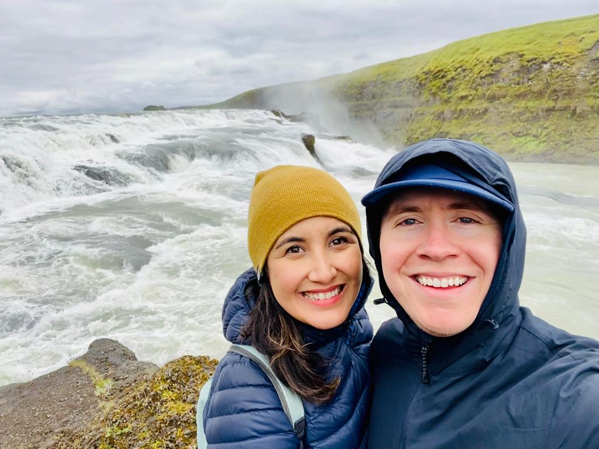
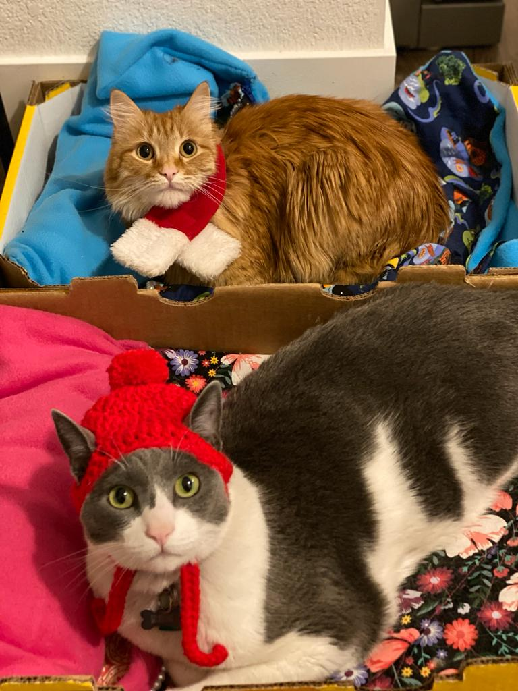
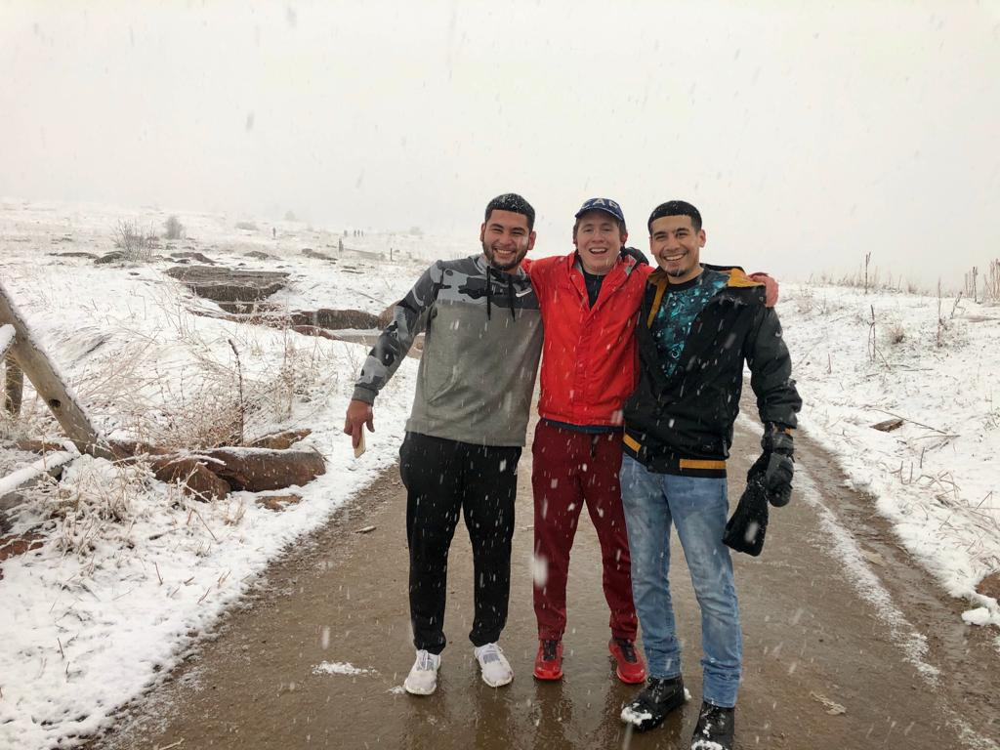
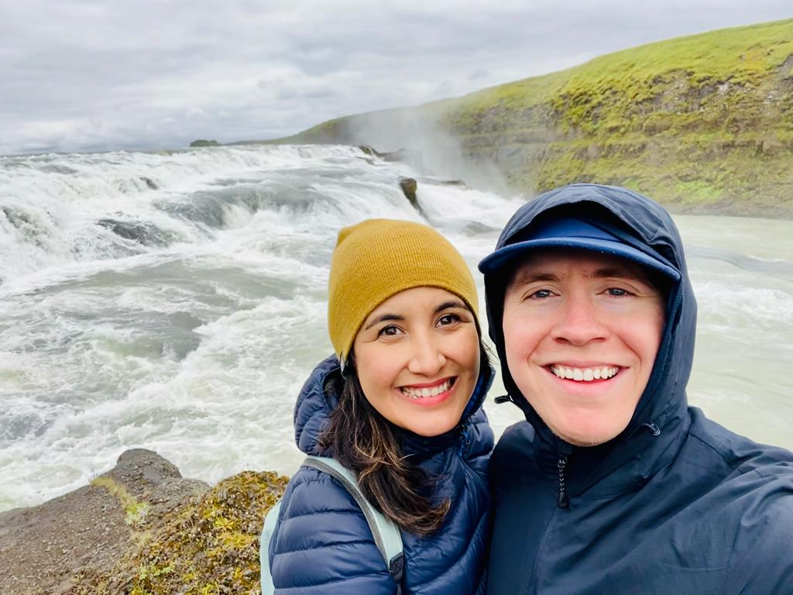
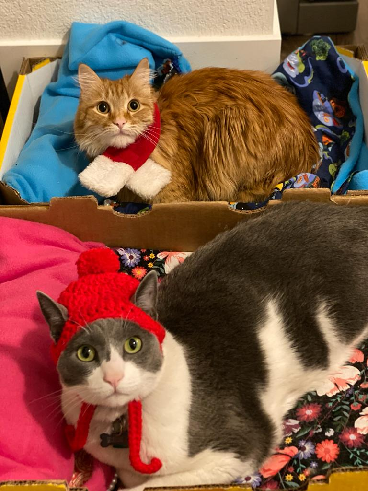
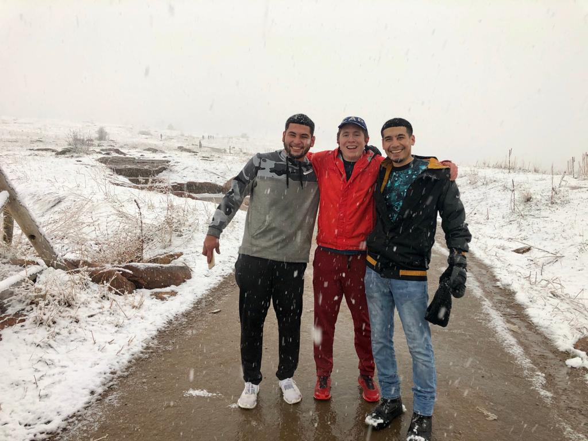

About
My name is Elisa. I am originally from Houston, TX. I live in CO with my two cats. I have been in technical recruiting for over 10 years.
  My name is Elisa. I am originally from Houston, TX. I live in CO with my two cats. I have been in technical recruiting for over 10 years.
  